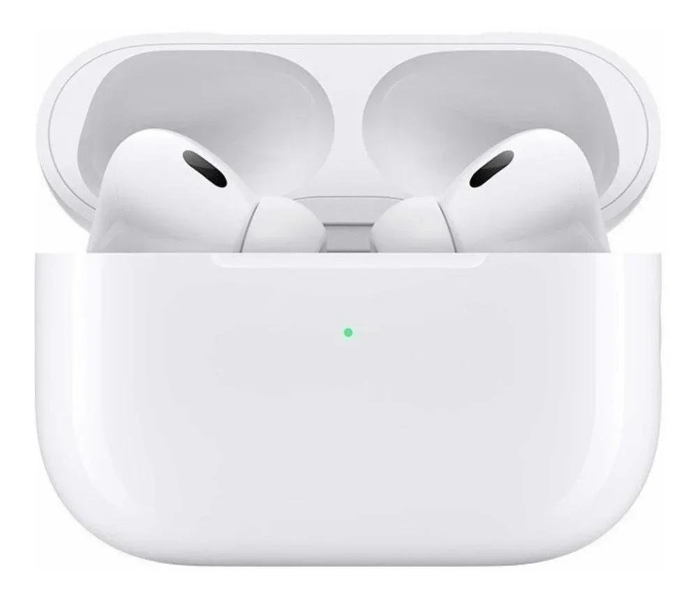

Descubra soluções tecnológicas e inovadoras desenvolvidas rigorosamente para transformar completamente o seu dia a dia.
Trabalhamos com matéria-prima de primeira linha, engenharia avançada e um design ergonômico incomparável.
O relógio inteligente definitivo para quem não abre mão de estilo e alta performance no estilo de vida moderno.
Conta com monitoramento cardíaco contínuo 24h, GPS integrado de alta precisão, bateria de longa duração para até 14 dias e certificação de resistência à água para esportes aquáticos.
| Imagem | Nome do Produto | Descrição | Preço |
|---|---|---|---|
| Smartwatch Alpha X | Relógio inteligente com monitoramento cardíaco, GPS integrado e bateria de longa duração. | R$ 299,00 |
Experimente uma experiência acústica e uma imersão sonora incomparável em qualquer lugar que você vá.
Equipado com cancelamento ativo de ruído híbrido, modo transparência avançado, áudio espacial em 360 graus e drivers de alta definição para graves profundos e agudos cristalinos.
| Imagem | Nome do Produto | Descrição | Preço |
|---|---|---|---|
 |
Fone Pods Pro | Fones de ouvido com cancelamento ativo de ruído, áudio espacial e drivers de alta definição. | R$ 199,00 |